1과목: 응용역학
1. 지름이 d인 원형 단면의 단주에서 핵(core)의 지름은?
2. 다음과 같은 보의 A점의 수직반력 VA는?
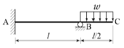
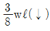
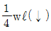
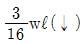
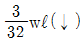
3. 다음과 같은 부재에서 길이의 변화량(δ)은 얼마인가? (단, 보는 균일하며 단면적 A와 탄성계수 E는 일정하다.)
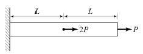
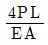
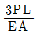
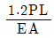
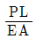
4. 무게 1kg의 물체를 두 끈으로 늘어뜨렸을 때 한 끈이 받는 힘의 크기 순서가 옳은 것은?
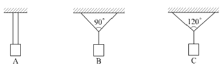
5. 정삼각형의 도심(G)을 지나는 여러 축에 대한 단면 2차 모멘트의 값에 대한 다음 설명 중 옳은 것은?
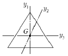
6. 그림과 같은 직사각형 단면의 단주에 편심축하중 P가 작용할 때 모서리 A점의 응력은?
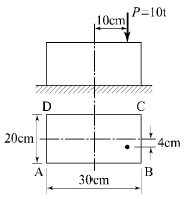
7. 아래 그림과 같은 단순보의 단면에서 발생하는 최대 전단응력의 크기는?
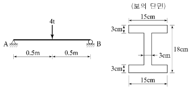
8. 구조해석의 기본 원리인 겹침의 원리(principle of superposition)를 설명한 것으로 틀린 것은?
9. 그림과 같은 트러스의 부재 EF의 부재력은?
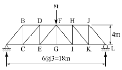
10. 아래 그림과 같은 캔틸레버보에서 휨모멘트에 의한 탄성변형에너지는? (단, EI는 일정)
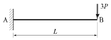
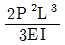
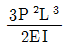
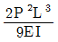
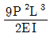
11. 체적탄성계수 K를 탄성계수 E와 프와송비 v로 옳게 표시한 것은?
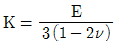
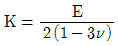
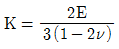
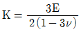
12. 다음과 같은 부정정보에서 A의 처짐각 θA는? (단, 보의 휨강성은 EI이다.)
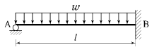
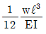
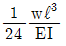
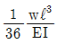
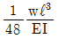
13. 그림과 같은 3힌지 아치의 중간 힌지에 수평하중 P가 작용할 때 A지점의 수직 반력과 수평 반력은? (단, A지점의 반력은 그림과 같은 방향을 정(+)으로 한다.)
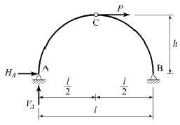
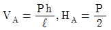
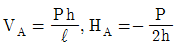
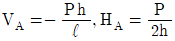
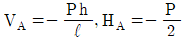
14. 단면이 원형(반지름 R)인 보에 휨모멘트 M이 작용 할 때 이 보에 작용하는 최대휨응력은?
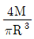
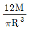
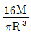
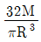
15. 아래 그림과 같이 게르버보에 연행하중이 이동할 때 지점 B에서 최대 휨 모멘트는?
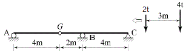
16. 다음 구조물에서 최대처짐이 일어나는 위치까지의 거리 Xm을 구하면?
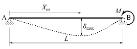
17. 그림(b)는 그림(a)와 같은 게르버보에 대한 영향선이다. 다음 설명 중 옳은 것은?
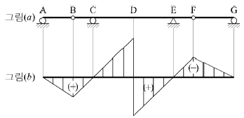
18. 다음 T형 단면에서 X축에 관한 단면 2차 모멘트 값은?
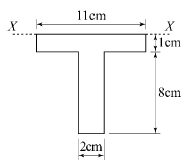
19. 그림과 같은 단순보에서 C점의 휨모멘트는?
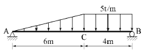
20. 그림과 같이 세 개의 평행력이 작용할 때 합력 R의 위치 x는?
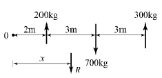
2과목: 측량학
21. 지형의 토공량 산정 방법이 아닌 것은?
22. 그림에서
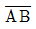
=500m, ∠a=71°33′54″, ∠b1=36°52′12″, ∠b2=39°⑤′38″, ∠c=85°36′⑤″를 관측하였을 때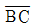
의 거리는?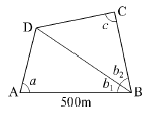
23. 비행고도 6000m에서 초점거리 15cm인 사진기로 수직항공사진을 획득하였다. 길이가 50m인 교량의 사진 상의 길이는?
24. 구하고자 하는 미지점에 평판을 세우고 3개의 기지점을 이용하여 도상에서 그 위치를 결정하는 방법은?
25. 클로소이드(clothoid)의 매개변수(A)가 60m, 곡선길이(L)가 30m일 때 반지름(R)은?
26. 하천측량에 대한 설명으로 틀린 것은?
27. 지형의 표시법에서 자연적 도법에 해당하는 것은?
28. 도로 설계시에 단곡선의 외할(E)은 10m, 교각은 60°일 때, 접선장(T.L)은?
29. 레벨을 이용하여 표고가 53.85m인 A점에 세운 표척을 시준하여 1.34m를 얻었다. 표고 50m의 등고선을 측정하려면 시준하여야 할 표척의 높이는?
30. 다각측량에 관한 설명 중 옳지 않은 것은?
31. 기지의 삼각점을 이용하여 새로운 도근점들을 매설하고자 할 때 결합 트래버스측량(다각측량)의 순서는?
32. 완화곡선에 대한 설명으로 옳지 않은 것은?
33. 축척 1:600인 지도상의 면적을 축척 1:500으로 계산하여 38.675m2을 얻었다면 실제면적은?
34. A, B 두 점간의 거리를 관측하기 위하여 그림과 같이 세 구간으로 나누어 측량하였다. 측선
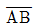
의 거리는? (단, Ⅰ:10m±0.01m, Ⅱ : 20m±0.03m, Ⅲ : 30m±0.⑤m이다.)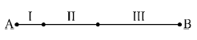
35. 그림과 같은 터널 내 수준측량의 관측결과에서 A점의 지반고가 20.32m일 때 C점의 지반고는? (단, 관 측값의 단위는 m이다.)(오류 신고가 접수된 문제입니다. 반드시 정답과 해설을 확인하시기 바랍니다.)
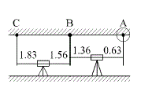
36. 그림의 다각측량 성과를 이용한 C점의 좌표는? (단, =100m이고, 좌표 단위는 m이다.)
37. A, B, C, D 네 사람이 각각 거리 8km, 12.5km, 18km, 24.5km의 구간을 왕복 수준측량하여 폐합차를 7mm, 8mm, 10mm, 12mm 얻었다면 4명 중에서 가장 정확한 측량을 실시한 사람은?
38. 항공사진의 특수 3점에 해당되지 않는 것은?
39. 수준점 A, B, C에서 수준측량을 하여 P점의 표고를 얻었다. 관측거리를 경중률로 사용한 P점 표고의 최확값은?
40. 지구상에서 50km 떨어진 두 점의 거리를 지구곡률을 고려하지 않은 평면측량으로 수행한 경우의 거리 오차는? (단, 지구의 반지름은 6370km이다.)
3과목: 수리학 및 수문학
41. 다음 중 유효강우량과 가장 관계가 깊은 것은?
42. 지하수의 투수계수에 관한 설명으로 틀린 것은?
43. 그림과 같은 노즐에서 유량을 구하기 위한 식으로 옳은 것은? (단, 유량계수는 1.로 가정한다.)
44. 물의 점성계수를 μ, 동점성계수를 v, 밀도를 ρ라 할때 관계식으로 옳은 것은?
45. 폭 2.5m, 월류수심 0.4m인 사각형 위어(weir)의 유량은? (단, Francis 공식 : Q=1.84Boh3/2에 의하며, Bo : 유효폭, h : 월류수심, 접근유속은 무시하며 양단수축이다.)
46. 흐름의 단면적과 수로경사가 일정할 때 최대유량이 흐르는 조건으로 옳은 것은?
47. 그림과 같이 단위폭당 자중이 3.5×106N/m인 직립식 방파제에 1.5×106N/m의 수평 파력이 작용할때, 방파제의 활동 안전율은? (단, 중력가속도=10.0m/s2, 방파제와 바닥의 마찰계수=0.7, 해수의 비중 =1로 가정하며, 파랑에 의한 양압력은 무시하고, 부력은 고려한다.)
48. 유역면적이 4km2이고 유출계수가 0.8인 산지하천에서 강우강도가 80mm/hr이다. 합리식을 사용한 유역 출구에서의 첨두홍수량은?
49. Manning의 조도계수 n=0.012인 원관을 사용하여 1m3/s의 물을 동수경사 1/100로 송수하려 할 때 적당한 관의 지름은?
50. 관수로 흐름에서 레이놀즈수가 500보다 작은 경우의 흐름 상태는?
51. 광폭 직사각형 단면 수로의 단위폭당 유량이 16m3/s일 때, 한계경사는? (단, 수로의 조도계수 n=0.02이다.)
52. 개수로 흐름에 관한 설명으로 틀린 것은?
53. 정지유체에 침강하는 물체가 받는 항력(drag force)의 크기가 관계가 없는 것은?
54. Δt 시간동안 질량 m인 물체에 속도변화 Δv 가 발생할 때, 이 물체에 작용하는 외력 F는?
55. 다음 중 평균 강우량 산정방법이 아닌 것은?
56. 강우 자료의 일관성을 분석하기 위해 사용하는 방법은?
57. 부체의 안정에 관한 설명으로 옳지 않은 것은?
58. 다음 중 물의 순환에 관한 설명으로서 틀린 것은?
59. 압력수두 P, 속도수두 V, 위치수두 Z라고 할 때 정체압력수두 PS는?
60. 관수로에서 관의 마찰손실계수가 0.02, 관의 지름이 40cm일 때, 관내 물의 흐름이 100m를 흐르는 동안 2m의 마찰손실수두가 발생하였다면 과내의 유속은?
4과목: 철근콘크리트 및 강구조
61. 아래 T형보에서 공칭모멘트강도(Mn)는? (단, fck=24MPa, fy=400MPa, As=4764mm2)
62. PSC 보의 휨 강도 계산 시 긴장재의 응력 fps의 계산은 강재 및 콘크리트의 응력-변형률 관계로부터 정확히 계산할 수도 있으나 콘크리트구조기준에서는 fps를 계산하기 위한 근사적 방법을 제시하고 있다. 그 이유는 무엇인가?
63. 직사각형 보에서 계수 전단력 Vu= 70kN을 전단철 근없이 지지하고자 할 경우 필요한 최소 유효깊이 d는 약 얼마인가? (단, b=400mm, fck=21MPa, fy= 350MPa)
64. 철근의 겹침이음 등급에서 A급 이음의 조건은 다음 중 어느 것인가?
65. 철근콘크리트 부재의 전단철근에 관한 다음 설명 중 옳지 않은 것은?
66. 다음 중 반T형보의 유효폭(b)을 구할 때 고려하여야할 사항이 아닌 것은? (단, bw는 플랜지가 있는 부재의 복부폭)
67. 아래 그림과 같은 필렛용접의 형상에서 S=9mm일 때 목두께 a의 값으로 적당한 것은?
68. 옹벽에서 T형보로 설계하여야 하는 부분은?
69. 복철근 보에서 압축철근에 대한 효과를 설명한 것으로 적절하지 못한 것은?
70. PSC 부재에서 프리스트레스의 감소 원인중 도입후에 발생하는 시간적 손실의 원인에 해당하는 것은?
71. 휨부재 설계시 처짐계산을 하지 않아도 되는 보의 최소 두께를 콘크리트구조기준에 따라 설명한 것으로 틀린 것은? (단, 보통중량콘크리트(mc=2300kg/m3)와 fy는 400MPa인 철근을 사용한 부재이며, ℓ 부재의 길이이다.)
72. 다음 중 콘크리트구조물을 설계할 때 사용하는 하중인 “활하중(live load)”에 속하지 않는 것은?
73. 그림과 같은 두께 13mm의 플레이트에 4개의 볼트 구멍이 배치 되어있을 때 부재의 순단면적은? (단, 구멍의 직경은 24mm이다.)
74. 다음 중 용접부의 결함이 아닌 것은?
75. 철근콘크리트 보를 설계할 때 변화구간에서 강도감소계수(ø)를 구하는 식으로 옳은 것은? (단, 나선철근으로 보강되지 않은 부재이며, εt는 최외단 인장철근의 순인장변형률이다.)
76. 아래 그림과 같은 복철근 직사각형보에서 압축연단에서 중립축까지의 거리(c)는? (단, As=4764mm2, As=1284mm2, fck=38MPa, fy=400MPa)(오류 신고가 접수된 문제입니다. 반드시 정답과 해설을 확인하시기 바랍니다.)
77. 그림과 같은 띠철근 기둥에서 띠철근의 최대 간격은? (단, D10의 공칭직경은 9.5mm, D32의 공칭직경은 31.8mm)
78. 단순 지지된 2방향 슬래브의 중앙점에 집중하중 P가 작용할 때 경간비가 1:2라면 단변과 장변이 부담하는 하중비(PS : PL)는? (단, PS : 단변이 부담하는하중, PL : 장변이 부담하는 하중)
79. 경간 6m인 단순 직사각형 단면(b=300mm, h=400mm)보에 계수하중 30kN/m가 작용할 때 PS강재가 단면도심에서 긴장되며 경간 중앙에서 콘크리트 단면의 하연 응력이 0이 되려면 PS강재에 얼마의 긴장력이 작용되어야 하는가?
80. 철근콘크리트가 성립하는 이유에 대한 설명으로 잘못된 것은?
5과목: 토질 및 기초
81. 어떤 시료에 대해 액압 1.0kg/cm2가해 각 수직변위에 대응하는 수직하중을 측정한 결과가 아래 표와 같다. 파괴시의 축차응력은? (단, 피스톤의 지름과시료의 지름은 같다고 보며, 시료의 단면적 AO=18cm2, 길이 L=14cm이다.)
82. 전단마찰력이 25°인 점토의 현장에 작용하는 수직응력이 5t/m2이다. 과거 작용했던 최대 하중이 10t/m2이라고 할 때 대상지반의 정지토압계수를 추정하면?
83. 무게 3ton인 단동식 증기 hammer를 사용하여 낙하고 1.2m에서 pile을 타입할 때 1회 타격당 최종 침하량이 2cm 이었다. Engineering News 공식을 사용하여 허용 지지력을 구하면 얼마인가?
84. 점토 지반의 강성 기초의 접지압 분포에 대한 설명으로 옳은 것은?
85. 다음 그림과 같이 피압수압을 받고 있는 2m 두께의 모래층이 있다. 그 위로 포화된 점토층을 5m 깊이로 굴착하는 경우 분사현상이 발생하지 않기 위한 수심(h)은 최소 얼마를 초과하도록 하여야 하는가?
86. 내부마찰각 øu=0, 점착력 cu=4.5t/m2, 단위중량이 1.9t/m3되는 포화된 점토층에 경사각 45°로 높이 8m인 사면을 만들었다. 그림과 같은 하나의 파괴면을 가정했을 때 안전율은? (단, ABCVD의 면적은 70m이고, ABCD의 무게중심은 O점에서 4.5m거리에 위치하며, 호 AC의 길이는 20.0m이다.)
87. 다음 중 임의 형태 기초에 작용하는 등분포하중으로 인하여 발생하는 지중응력계산에 사용하는 가장 적합한 계산법은?
88. 노건조한 흙 시료의 부피가 1000cm3, 무게가 1700g, 비중이 2.65이라면 간극비는?
89. 흙의 공학적 분류방법 중 통일분류법과 관계없는 것은?
90. 수조에 상방향의 침투에 의한 수두를 측정한 결과, 그림과 같이 나타났다. 이 때, 수조 속에 있는 흙에 발생하는 침투력을 나타낸 식은? (단, 시료의 단면적은 A, 사료의 길이는 L, 시료의 포화단위중량은 γsat, 물의 단위중량은 γw이다.)
91. 포화단위중량이 1.8t/m인 흙에서의 한계동수경사는 얼마인가?
92. 입경이 균일한 도포화된 사질지반에 지진이나 진동등 동적하중이 작용하면 지반에서는 일시적으로 전단강도를 상실하게 되는데, 이러한 현상을 무엇이라고 하는가?
93. 다음 시료채취에 사용되는 시료기(sampler) 중 불교란시료 채취에 사용되는 것만 고른 것으로 옳은 것은?
94. 점토의 다짐에서 최적함수보다 함수비가 적은 건조측 및 함수비가 많은 습윤측에 대한 설명을 옳지 않은 것은?
95. 어떤 지반에 대한 토질시험결과 점착력 c=0.50kg/cm2, 흙의 단위중량 γ=2.0t/m3이었다. 그 지반에 연직으로 7m를 굴착했다면 안전율은 얼마인가? (단, ø=0 이다.)
96. 다음 그림과 같이 점토질 지반에 연속기초가 설치되어 있다. Terzaghi 공식에 의한 이 기초의 허용 지지력은? (단, ø=0이며, 폭(B)=2m, Nc=5.14, Nq=1.0, Nγ=0, 안전율 FS=3이다.)
97. Meyerhof의 극한지지력 공식에서 사용하지 않는 계수는?
98. 토질조사에 대한 설명 중 옳지 않은 것은?
99. 2.0kg/cm2의 구속응력을 가하여 시료를 완전히 압밀시킨 다음, 축차응력을 가하여 비배수 상태로 전단시켜 파괴시 축변형률 εf=10%, 축차응력 Δσf=2.8kg/cm2, 간극수압 Δuf=2.1kg/cm2를 얻었다. 파괴시 간극수압계수 A는? (단, 간극수압계수 B는 1.0으로 가정한다.)
100. 아래 그림과 같이 3개의 지층으로 이루어진 지반에서 수직방향 등가투수계수는?
6과목: 상하수도공학
101. 도수(conveyance of water)시설에 대한 설명으로 옳은 것은?
102. 양수량이 50m3/min 이고 전양정이 8m 일 때 펌프의 축동력은? (단, 펌프의 효율(n)=0.8)
103. 계획오수량 중 계획시간최대오수량에 대한 설명으로 옳은 것은?
104. 완속여과와 급속여과의 비교 설명으로 틀린 것은?
1⑤. 수질오염 지표항목 중 COD에 대한 설명으로 옳지 않은 것은?
106. 고형물 농도가 30mg/L인 원수를 Alum 25mg/L를 주입하여 응집 처리하고자 한다. 1000m3/day 원수를 처리할 때 발생 가능한 이론적 최종 슬러지(A1(OH)3)의 부피는? (단, Alum=A12(SO4)3⋅18H2O, 최종 슬러지 고형물농도=2%, 고형물 비중=1.2)
107. 다음 중 하수슬러지 개량방법에 속하지 않는 것은?
108. 합리식을 사용하여 우수량을 산정할 때 필요한 자료가 아닌 것은?
109. 일반적인 하수처리장의 2차침전지에 대한 설명으로 옳지 않은 것은?
110. 어느 도시의 인구가 10년 전 10만명에서 현재는 20만명이 되었다. 등비급수법에 의한 인구증가를 보였다고 하면 연평균 인구증가율은?
111. 하수도용 펌프 흡입구의 유속에 대한 설명으로 옳은 것은?
112. 상수도 배수관망 중 격자식 배수관망에 대한 설명으로 틀린 것은?
113. 정수처리 시 트리할로메탄 및 곰팡이 냄새의 생성을 최소화하기 위해 침전지와 여과지 사이에 염소제를 주입하는 방법은?
114. 호수의 부영양화에 대한 설명으로 틀린 것은?
115. 콘크리트 하수관의 내부 천정이 부식되는 현상에 대한 대응책으로 틀린 것은?
116. 하수 배제방식의 특징에 관한 설명으로 틀린 것은?
117. 1인 1일 평균 급수량의 일반적인 증가·감소에 대한설명으로 틀린 것은?
118. 하수고도처리에서 인을 제거하기 위한 방법이 아닌 것은?
119. 상수도 계통에서 상수의 공급과정으로 옳은 것은?
120. 우수관거 및 합류관거 내에서의 부유물 침전을 막기 위하여 계획우수량에 대하여 요구되는 최소 유속은?